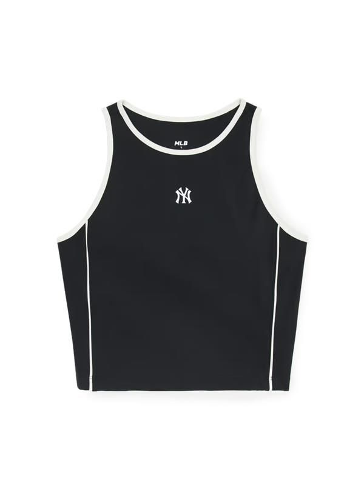
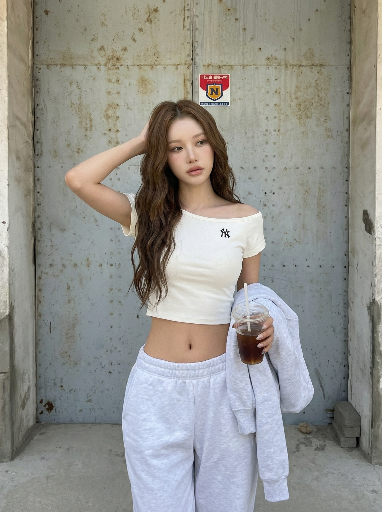

Real Example
Case Study — MLB DNA Generation
실제 MLB DNA 프로필로 생성한 이미지의 전체 데이터 흐름을 추적합니다.
INPUT: 인물 이미지

레퍼런스 인물1.png
INPUT: 착장 이미지

MLB 착장 레퍼런스
INPUT: Background Reference
없음 (Preset 기본 배경 사용)
DNA Profile — MLB 겨울 화보 (3장)
Brand: MLB · Strength: 0.8
Vibe: cool, street, chic, unbothered, mysterious
Vibe: cool, street, chic, unbothered, mysterious

 DNA 추출에 사용된 레퍼런스
DNA 추출에 사용된 레퍼런스
Brand Preset
db/brand_presets/mlb.json
▸ Preset 프롬프트 상세
pose.stance: power stance, standing tall with confident posture
pose.왼팔: hand on hip, elbow pointing outward, assertive
pose.힙: weight shifted to one side, S-curve silhouette
expression: fierce / confident_chic / direct_intense / closed
background: clean concrete, metallic accents, cool neutral
concept: MLB 'Young & Rich' - 프리미엄하고 자신감 있는 느낌
negative: bright smile, teeth, golden hour, warm amber, weak posture
데이터 흐름 추적
1
build_prompt()
— Preset 기본값으로 뼈대 생성
Pose (from mlb.json)
stance: "power stance, standing tall..."
왼팔: "hand on hip, elbow pointing outward"
힙: "weight shifted, S-curve silhouette"
왼팔: "hand on hip, elbow pointing outward"
힙: "weight shifted, S-curve silhouette"
Expression (from mlb.json)
베이스: "fierce"
바이브: "confident_chic"
시선: "direct_intense"
바이브: "confident_chic"
시선: "direct_intense"
▸ Preset 상세 + 결과 이미지 반영 분석
Preset Prompt
pose.stance:
"power stance, standing tall with confident posture, weight on one leg"
"power stance, standing tall with confident posture, weight on one leg"
pose.왼팔:
"hand on hip, elbow pointing outward, assertive"
"hand on hip, elbow pointing outward, assertive"
pose.힙:
"weight shifted to one side, S-curve silhouette"
"weight shifted to one side, S-curve silhouette"
expression.입:
"closed"
"closed"
background:
"clean concrete floor with metallic accents, industrial minimalist, cool neutral tones"
"clean concrete floor with metallic accents, industrial minimalist, cool neutral tones"
negative:
"bright smile, teeth showing, golden hour, warm amber..."
"bright smile, teeth showing, golden hour, warm amber..."
결과 이미지에서 반영 확인
✓ hand on hip — 왼손이 엉덩이에 올려져 있음
✓ S-curve silhouette — 힙 쉬프트로 자연스러운 곡선
✓ closed mouth — 입을 다물고 도도한 표정
✓ cool neutral tones — 배경 전체가 쿨 뉴트럴 그레이
✓ concrete industrial — 미니멀 콘크리트 공간
◆ 시선: looking_past — DNA가 direct_intense → looking_past로 패치, 카메라 옆을 바라봄
✓ no smile — 네거티브 프롬프트 반영, 웃음 없음
2
adapt_prompt()
— DNA 프로필이 일부 필드 패치
패치된 필드 ✓
stance: "power stance" → "confident"
왼팔: "hand on hip" → "arms relaxed"
표정.베이스: "fierce" → "cool"
시선: "direct_intense" → "looking_past"
왼팔: "hand on hip" → "arms relaxed"
표정.베이스: "fierce" → "cool"
시선: "direct_intense" → "looking_past"
패치 안 된 필드 ✗
다리, 힙, 눈썹, 배경, 톤, 네거티브
→ Preset 기본값 그대로 유지
→ Preset 기본값 그대로 유지
3
Korean Prompt 재생성
— adapted JSON 기반
이 얼굴의 한국인 여성 모델.
[착장]
크롭 후드 윈드브레이커 자켓, 더스티 핑크...
[순간]
도시 스트릿 또는 미니멀 스튜디오에서 서 있는 자연스러운 순간.
hip_confident 분위기의 표정.
패션 매거진 에디토리얼 화보 같은 분위기.
MLB 웰니스 액티브 라이프스타일 - 기능성이 패션이 되는 프리미엄 스트릿.
[필수]
강렬한 눈빛으로 카메라 응시.
도도하면서도 힙한 자신감 있는 표정.
힙한 액티브 포즈.
클린한 도시 배경.
뉴트럴쿨 색감 유지.
4
generate_brandcut()
— Gemini API에 전송
Part 1:Korean Prompt 텍스트 (위 내용)
Part 2:JSON 전체 (참조용)
Part 3:포즈/표정/촬영 디테일 강조
Part 4:착장 디테일 (VLM 분석 결과)
Part 5:Face 이미지 (img_859f35ce) + "이 얼굴 100% 동일하게"
Part 6:Outfit 이미지 (img_05525083) + "착장 정확히 재현"
Part 7:Background Reference — 없음 (Preset 배경 텍스트만)
✓
Result
Score 96.0 / Grade S
Preset 반영
배경: 도시 콘크리트
톤: 쿨 뉴트럴
네거티브: 골든아워 차단
톤: 쿨 뉴트럴
네거티브: 골든아워 차단
DNA 반영
포즈: confident (power stance 약화)
표정: cool (fierce 약화)
시선: looking past
표정: cool (fierce 약화)
시선: looking past
Image 반영
얼굴: 동일 인물
착장: NY 원피스 정확 재현
가방: 블랙 토트백
착장: NY 원피스 정확 재현
가방: 블랙 토트백